I am a Senior Researcher at the Visual Intelligence Lab, ETRI (Electronics and Telecommunications Research Institute), where I have been working since 2019 on visual intelligence for intelligent transportation systems.
I am also a Ph.D. student in the School of Electrical Engineering at KAIST, advised by Prof. Changick Kim at the Computational Imaging Lab.
My research interests center on video understanding — teaching models not only to recognize what is happening, but to anticipate what comes next. I approach this through multimodal learning and vision-language models, and apply it to the full picture of a road scene: what pedestrians are about to do and where vehicles are headed, toward intelligent transportation systems and pedestrian safety.
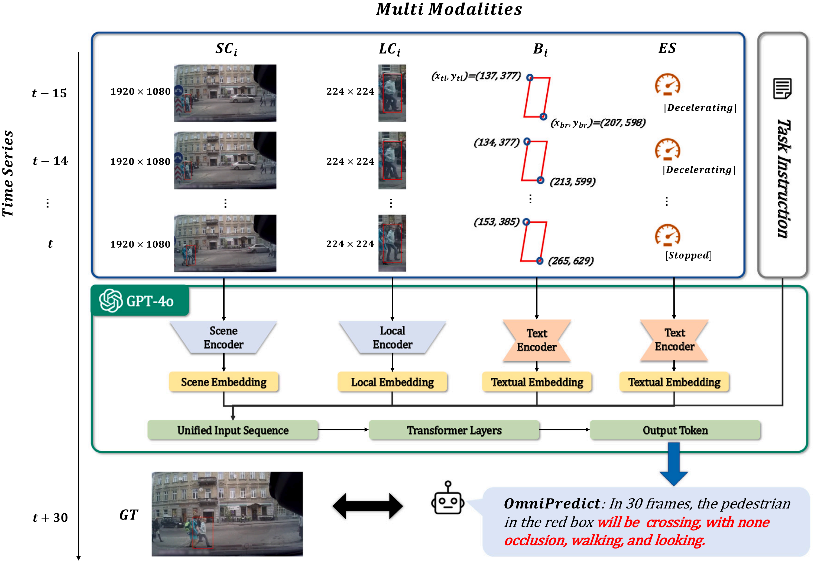
Multimodal Understanding with GPT-4o to Enhance Generalizable Pedestrian Behavior Prediction
Computers and Electrical Engineering, Vol. 129, No. 110741, 2026 Citation: 2
[ paper ]
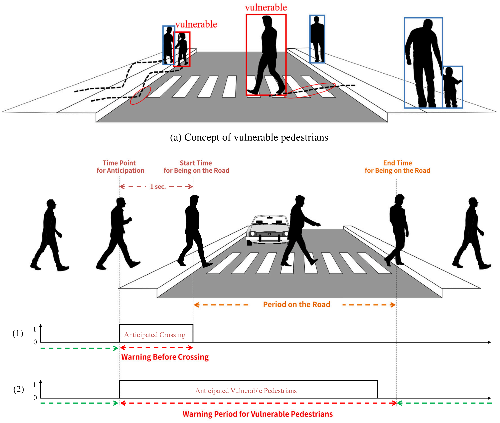
WatchoutPed: A Dataset and Model for Vulnerable Pedestrian Anticipation in Surveillance Videos
Knowledge-Based Systems, Vol. 316, No. 113352, 2025 Citation: 6
[ paper ]
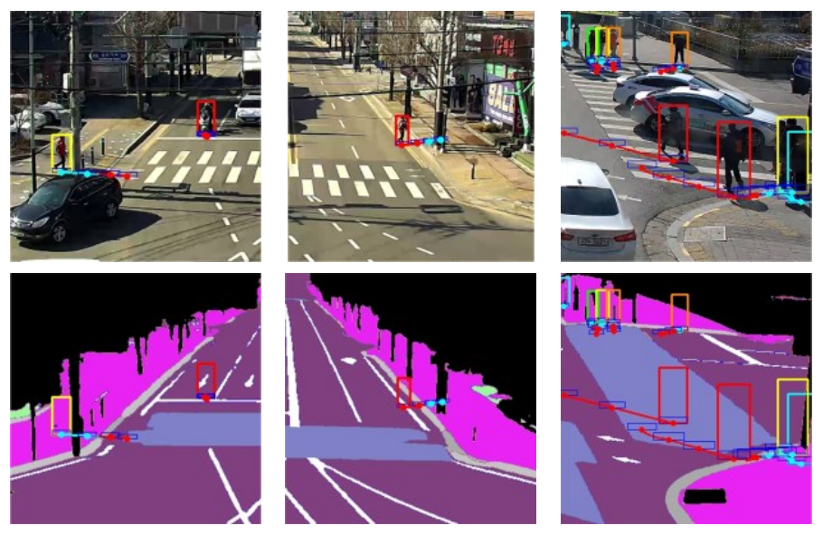
Proactive Pedestrian Safety System by Fusing Trajectory Prediction with Semantic Ground Region Classification
IEEE International Conference on Advanced Video and Signal-Based Surveillance (AVSS), 2025
[ paper ]
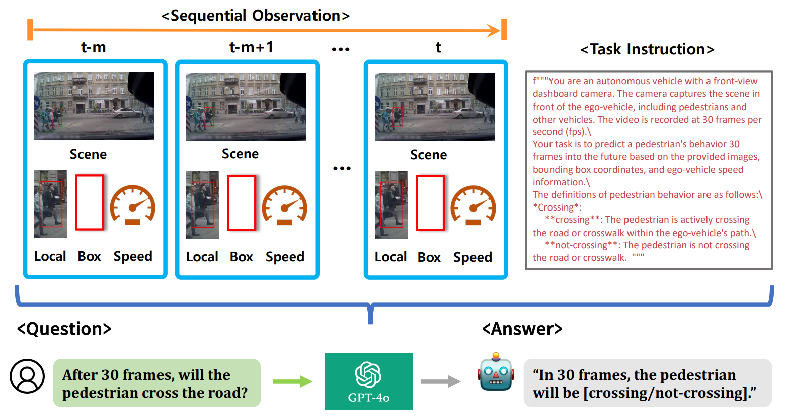
OmniPredict: GPT-4o Enhanced Multi-modal Pedestrian Crossing Intention Prediction
NeurIPS 2024 Workshops on Adaptive Foundation Models Citation: 9
[ paper ]
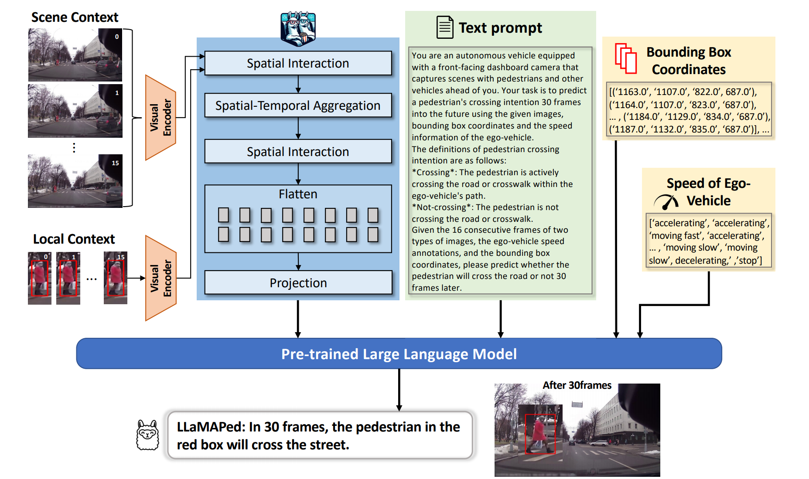
LLaMAPed: Multi-modal Pedestrian Crossing Intention Prediction
ECCV 2024 Workshops, pp. 150–167 Citation: 8
[ paper ]
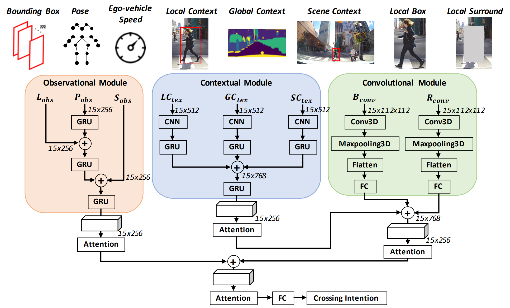
CIPF: Crossing Intention Prediction Network based on Feature Fusion Modules for Improving Pedestrian Safety
CVPR 2023 Workshops, pp. 3665–3674 Citation: 79
[ paper ]
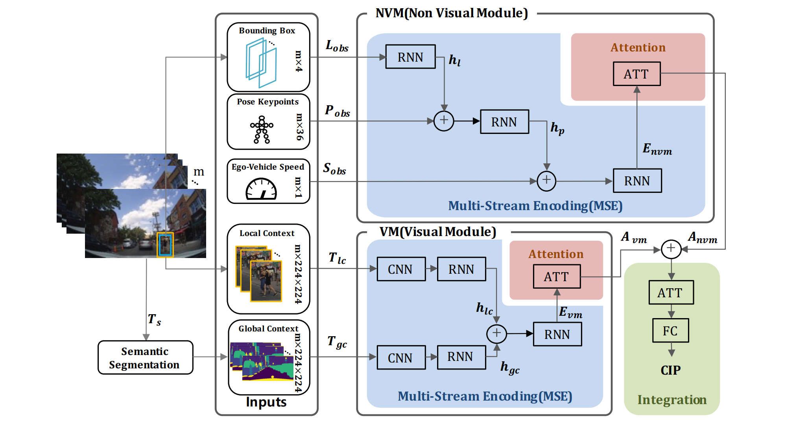
MCIP: Multi-Stream Network for Pedestrian Crossing Intention Prediction
ECCV 2022 Workshops, pp. 663–679 Citation: 44
[ paper ]
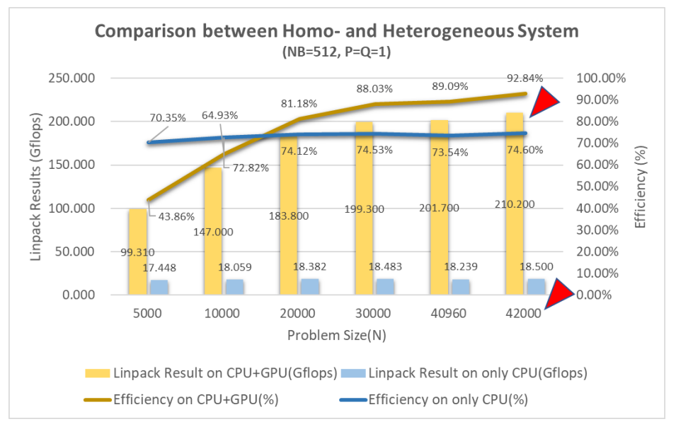
HPC LINPACK Parameter Optimization on Homo-/Heterogeneous System of ARM Neoverse N1SDP
International Conference on High Performance Computing in Asia-Pacific Region (HPC Asia), 2021 Citation: 1
[ paper ]
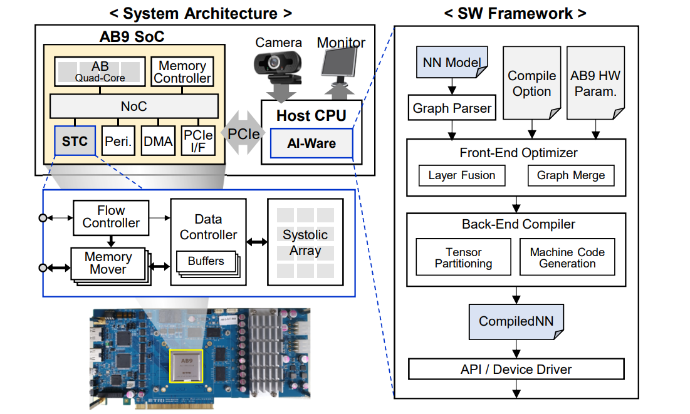
Live Demonstration: A Neural Processor for AI Acceleration
IEEE International Symposium on Circuits and Systems (ISCAS), 2021 Citation: 5
[ paper ]
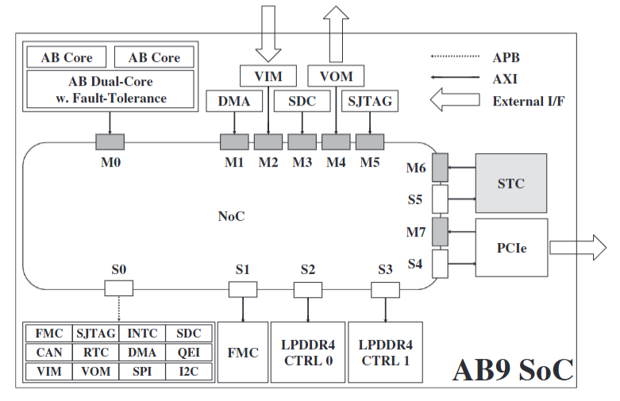
AB9: A Neural Processor for Inference Acceleration
ETRI Journal, Vol. 42, No. 4, pp. 491–504, 2020 Citation: 13
[ paper ]
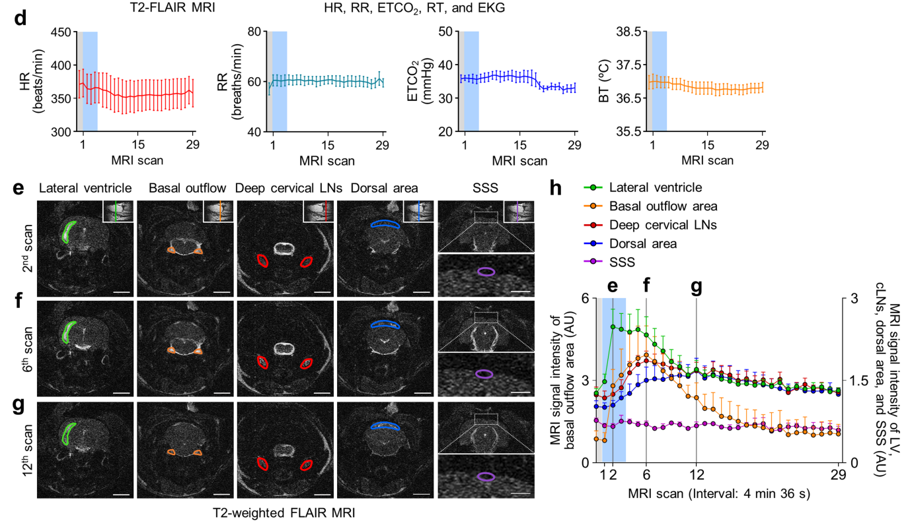
Meningeal Lymphatic Vessels at the Skull Base Drain Cerebrospinal Fluid
Nature, Vol. 572, No. 7767, pp. 62–66, 2019 Citation: 924
[ paper ]
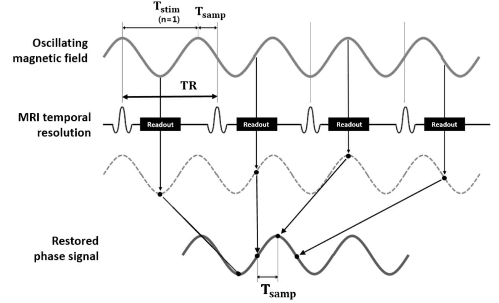
Multiple TR Approach for Direct Detection of Fast Oscillating Magnetic Fields
ISMRM 27th Annual Meeting & Exhibition, 2019
[ paper ]
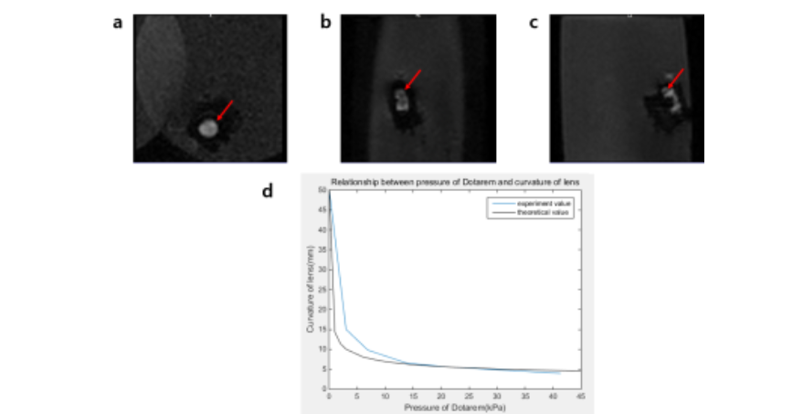
Intra-operative MRI with MR Detectable Endoscope Using Tunable Lens Filled with MR Contrast Agent
ISMRM 26th Annual Meeting & Exhibition, No. 1505, 2018
[ paper ]